EE 306 : An Application of Bayes Theorem in Communications
We revisit the problem discussed in the lecture hours.
Assume that S is a binary random variable taking values 0 and 1 with the probability of p and q = 1 - p, respectively.
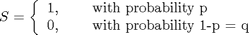
We observe not S, but its noise corrupted version:
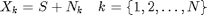
Here  is the k'th observation. 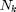 is the random variable representing noise which corrupts the signal S. We assume that the random variable is independent and identically Gaussian distributed with zero mean and variance 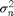,
is the k'th observation. 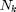 is the random variable representing noise which corrupts the signal S. We assume that the random variable is independent and identically Gaussian distributed with zero mean and variance 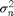,
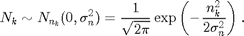
One can visualize the situation as follows. The transmitter sends either 1 or 0; which is the information bit to be delivered to the receiver. The receiver observes the signal S in the presence of noise. (The noise is Gaussian distributed as noted above.) Assume that 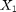 is 1.01. If 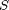 is 1, the noise 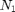 has to be 0.01 to produce this observation. Similarly, if is 0, the noise has to be 1.01 to produce the same observation. Our goal is to decide on S given an observation, say . It is intuitively clear that for 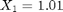, the event of 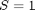 is more likely than 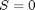. We would like to quantify this intuition by working out the probability of given , in terms of density functions it is 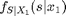.
The distribution of the before we observe is called the a-priori distribution of . From the problem statement, the a-priori density can be written as
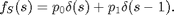
The conditional density can be written as
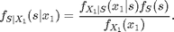
The density on the left, is called the posterior density. Stated differently, our goal is to calculate the posterior density.
From the observation model, the random variable given 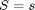 is distributed as
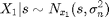
This result is easy to see, once we interpret this result as fixing the random variable S to a constant numerical value shown as s. In other words, given is a new random variable and s is just a parameter of this distribution (it is not any more a random variable after fixing its value).
Then, the posterior density can be written as
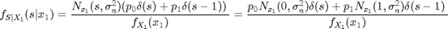
The denominator of the ratio given above can be calculated from the relation
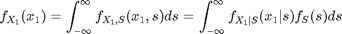
which is simply the integral of the numerator of the posterior density.
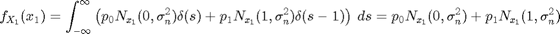
It should be noted that the denominator is just a scalar (a constant value) which does not functionally affect the density on the right hand side; but it is present to scale the right hand side of the equation such that the the area under the density is normalized to 1. It can be immediately verified that with this normalization the area under the density is indeed 1.
The posterior density can be finalized as
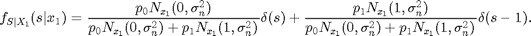
Note that, the posterior distribution updates the probability of the event from 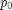 to 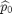 by processing the observation. Similarly, 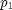 is updated to 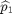:
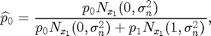
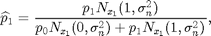
Hence, the prior density is updated from
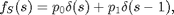
to the posterior
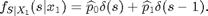
Now, we numerically study this mentioned update using MATLAB's computational facilities.
To do that, we first define the Gaussian distribution
pdfNormal = @(x,mu,var) 1/sqrt(2*pi*var)*exp(-(x-mu).^2/2/var);
Let's do a sanity check and calculate the area under the pdf. To do that we fix the mean value to 0, variance to 1 and calculate the area under pdf with the quad function as follows:
area = quad(@(x)pdfNormal(x,0,1),-5,5),
area =
1.0000
We only calculate the area under 5 standard deviations around the mean. It seems that everything is in order!
Let's define, the update equations:
update_p0 = @(p0,x1,sigma_n_sq) p0*pdfNormal(x1,0,sigma_n_sq)/... (p0*pdfNormal(x1,0,sigma_n_sq) + (1-p0)*pdfNormal(x1,1,sigma_n_sq)); update_p1 = @(p1,x1,sigma_n_sq) 1 - update_p0(1-p1,x1,sigma_n_sq); %
Let's take 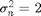, and p0 = p1 = 1/2 (Hence, the events of S=0 or S=1 are equally likely, which is the a-priori information.)
sigma_n_sq = 2; p0 = 1/2; p1 = 1/2;
For now, assume that the observation 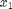 is 1.01. For this observation, the updated probabilities can be calculated as
x1 = 1.01; [update_p0(p0,x1,sigma_n_sq) update_p1(p1,x1,sigma_n_sq)]
ans =
0.4366 0.5634
Given, the observation of x1=1.01; the updated probability for s=1 is increased from its a-priori value of 0.5 to 0.5634. The increase is not significant for this case. This is due to large noise variance. That is, a there exists a fairly large probability for noise to be 1.01; therefore the event of S=0 has also a fairly large probability.
Let's decrease the noise variance and repeat the same experiment:
sigma_n_sq = 1; x1 = 1.01; [update_p0(p0,x1,sigma_n_sq) update_p1(p1,x1,sigma_n_sq)]
ans =
0.3752 0.6248
sigma_n_sq = 1/2; x1 = 1.01; [update_p0(p0,x1,sigma_n_sq) update_p1(p1,x1,sigma_n_sq)]
ans =
0.2650 0.7350
sigma_n_sq = 1/4; x1 = 1.01; [update_p0(p0,x1,sigma_n_sq) update_p1(p1,x1,sigma_n_sq)]
ans =
0.1151 0.8849
Note that, with 95% percent probability, a random pick from the Gaussian distribution lies in two standard deviations of the mean value. For the last case of 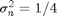, the two standard deviation interval around the mean is [-1,1]. Hence, 95% percent of time, we can not see the observation of  when 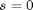.
when 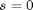.
In short, as the noise variance decreases, the probability of having a large valued noise also decreases and observing 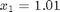 for the event of becomes less and less likely.
Let's use a high noise variance and make multiple observations on the unknown symbol S. Let's take 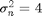 and generate 5 noisy observations on .
Without any loss of generality, let's examine the case of
sigma_n_sq = 4; s = 0; x = zeros(1,5); for k=1:5, x(k) = s + sqrt(sigma_n_sq)*randn(1); end; x,
x =
1.7619 0.6464 -1.5683 -3.6107 3.7172
It can be noted that the observations are large valued due to large noise variance.
We would like to estimate the s value given all observations. In other words, we would like to evaluate
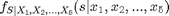
To evaluate the posterior density with 5 observations, we can do the updates in a recursive fashion. That is, we first find
then treat the updated probabilities of and as the prior probabilities before the observation of 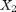 and generate 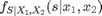.
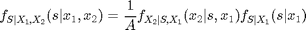
where 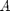 is a constant normalizing the density to unit area, as shown above. Note that the knowledge of 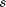 and is equivalent to the knowledge of and 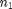. The knowledge of (noise of the first observation) does not help at any other observations, since noise is independent at every observation. Hence, we can discard the conditioning event of in this relation, since it does not affect the density on the right hand side:
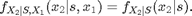
This fact is stated as is conditionally indendepent of given .
With this observation, we can write the posterior density as
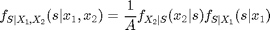
In the last equation is the updated density after the observation of which is the a-priori information before processing the second observation 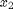. The other term 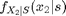 is identical to the term appearing in the update equation for the single observation case. (This term is called the likelihood term)
Hence, the only change between single observation and multiple observations case is taking the aposteriori distribution of the earlier iteration as the apriori density of the next iteration.
Given this discussion, we can calculate the posterior probability after each observation as:
p0old = 1/2; p1old = 1/2; p0_posterior = zeros(1,5); p1_posterior = zeros(1,5); for k=1:5, p0_posterior(k) = update_p0(p0old,x(k),sigma_n_sq); p1_posterior(k) = update_p1(p1old,x(k),sigma_n_sq); p0old = p0_posterior(k); p1old = p1_posterior(k); end; p0_posterior,
p0_posterior =
0.4218 0.4129 0.5412 0.7672 0.5959
We can note that as more and more observations are collected, the probability of making correct decision shows a tendency to increase.
Let's repeat the same example with 30 observations
sigma_n_sq = 4; s = 0; x = zeros(1,30); for k=1:30, x(k) = s + sqrt(sigma_n_sq)*randn(1); end; x,
x =
Columns 1 through 7
-1.2091 0.2067 1.1263 0.2272 -1.8095 -0.9354 -0.2498
Columns 8 through 14
2.9579 -1.7216 1.5693 0.6172 -0.4677 -2.1139 -0.5683
Columns 15 through 21
-0.1734 -2.9388 0.3844 -1.6446 -0.1885 0.6724 -1.8093
Columns 22 through 28
-0.5765 0.7001 -3.6717 2.0720 4.8489 1.9188 -0.6315
Columns 29 through 30
0.8572 -2.0720
Let's do the posterior calculation:
p0old = 1/2; p1old = 1/2; p0_posterior = zeros(1,30); p1_posterior = zeros(1,30); for k=1:30, p0_posterior(k) = update_p0(p0old,x(k),sigma_n_sq); p1_posterior(k) = update_p1(p1old,x(k),sigma_n_sq); p0old = p0_posterior(k); p1old = p1_posterior(k); end; p0_posterior,
p0_posterior =
Columns 1 through 7
0.6052 0.6226 0.5852 0.6016 0.7290 0.7939 0.8229
Columns 8 through 14
0.7153 0.8141 0.7702 0.7650 0.8057 0.8885 0.9123
Columns 15 through 21
0.9249 0.9668 0.9677 0.9808 0.9838 0.9831 0.9905
Columns 22 through 28
0.9927 0.9923 0.9973 0.9960 0.9882 0.9832 0.9873
Columns 29 through 30
0.9861 0.9927
Please compare the entries of the observation vector 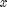 and the posterior density vector and try to understand why for some observations, there is a significant increase in the probability immediately after the update.
The main goal of communication system design is to establish a reliable communication between parties with a minimal repetition of the transmitted symbols, that is achieving a reliable communication (low probability of error) at a highest rate possible (with a low redundancy).